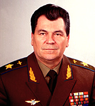

Шапошников Евгений Иванович

С сайта http://mega.km.ru
Шапошников Евгений Иванович (р. 1942), российский политический и военный деятель, маршал авиации (1991).
С 1979-1987 заместитель командующего, командующий ВВС ряда военных округов. С 1987 командующий ВВС Группы советских войск в Германии. С 1988 года — первый заместитель министра обороны СССР. С августа 1991 министр обороны СССР. В 1991-1993 главнокомандующий Вооруженными силами Содружества Независимых Государств. В июне-сентябре 1993 секретарь Совета Безопасности Российской Федерации. С января 1994 — представитель президента Российской Федерации при «Росвооружении». С ноября 1995 по 2000 - генеральный директор акционерного общества «Аэрофлот — Российские международные авиалинии».